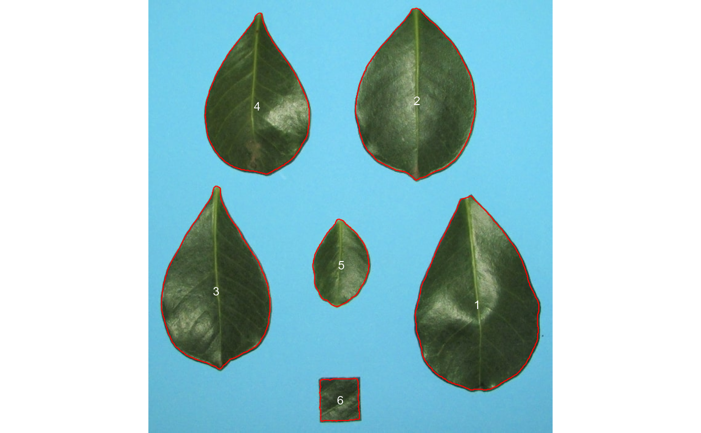

leaf_area () is deprecated. use analyze_objects() instead.
leaf_area( img, img_leaf, img_background, img_template, area_template, resize = FALSE, parallel = FALSE, workers = NULL, img_pattern = NULL, lower_size = NULL, upper_size = NULL, randomize = TRUE, nrows = 10000, show_image = TRUE, show_original = TRUE, show_background = TRUE, col_background = NULL, col_leaf = "green", text_col = "black", text_size = 1, text_digits = 2, save_image = FALSE, dir_original = NULL, dir_processed = NULL, verbose = TRUE )
| img | The image to be analyzed. |
|---|---|
| img_leaf | A color palette of the leaves. |
| img_background | A color palette of background area. |
| img_template | A color palette of the template areas. |
| area_template | The known area of the template. The leaf area will be
given in the same unit as |
| resize | Resize the image before processing? Defaults to |
| parallel | Processes the images asynchronously (in parallel) in separate
R sessions running in the background on the same machine. It may speed up
the processing time, especially when |
| workers | A positive numeric scalar or a function specifying the maximum number of parallel processes that can be active at the same time. |
| img_pattern | A pattern of file name used to identify images to be
processed. For example, if |
| lower_size | Lower limit for size for the image analysis. Leaf images
often contain dirt and dust. To prevent dust from affecting the image
analysis, the lower limit of analyzed size is set to 0.1, i.e., objects
with lesser than 10% of the mean of all objects are removed. One can set a
known area or use |
| upper_size | Upper limit for size for the image analysis. Defaults to
|
| randomize | Randomize the lines before training the model? |
| nrows | The number of lines to be used in training step. |
| show_image | Show image after processing? |
| show_original | Show the symptoms in the original image? |
| show_background | Show the background? Defaults to |
| col_background | Background color after image processing. |
| col_leaf | Leaf color after image processing when |
| text_col, text_size, text_digits | The color, size and significant digits
used in the text. The shows the pattern |
| save_image | Save the image after processing? The image is saved in the
current working directory named as |
| dir_original, dir_processed | The directory containing the original and
processed images. Defaults to |
| verbose | If |
A data frame with the results for each image.
# \donttest{ # use analyze_objects() to compute the leaf area. library(pliman) img <- image_pliman("la_leaves.jpg") lef_area <- analyze_objects(img, marker = "id")# correct pixel to metric units using the image dpi (~84) # the object 6 (leaf square) has a known area of ~ 4 cm2. get_measures(lef_area, dpi = 84)#> id x y area area_ch perimeter radius_mean radius_min radius_max #> 1 1 537.380 498.981 40.823 40.997 21.923 3.656 2.738 5.222 #> 2 2 438.655 165.253 34.959 35.090 19.292 3.350 2.860 4.541 #> 3 3 110.862 477.018 30.908 31.743 19.957 3.249 2.364 4.844 #> 4 4 178.467 174.227 27.104 27.494 17.961 3.006 2.286 4.357 #> 5 5 315.232 434.602 8.424 8.429 9.676 1.646 1.305 2.247 #> 6 6 313.445 655.336 3.914 3.923 7.590 1.113 0.919 1.356 #> radius_sd radius_ratio diam_mean diam_min diam_max major_axis minor_axis #> 1 21.561 1.907 7.311 5.476 10.445 9.097 0.275 #> 2 13.655 1.588 6.700 5.720 9.082 7.806 0.236 #> 3 21.404 2.050 6.498 4.727 9.689 7.903 0.239 #> 4 17.091 1.906 6.012 4.573 8.715 7.164 0.217 #> 5 8.608 1.721 3.292 2.610 4.493 4.051 0.122 #> 6 3.862 1.475 2.226 1.839 2.712 2.368 0.072 #> eccentricity theta solidity circularity #> 1 0.767 1.538 0.996 1.067 #> 2 0.675 -1.533 0.996 1.180 #> 3 0.758 1.545 0.974 0.975 #> 4 0.723 1.539 0.986 1.056 #> 5 0.752 -1.467 0.999 1.131 #> 6 0.380 -1.550 0.998 0.854# }